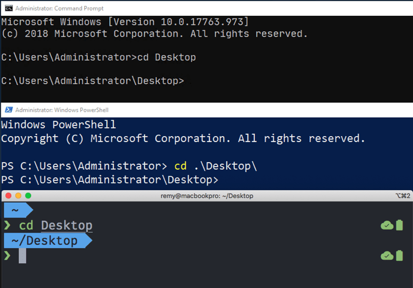
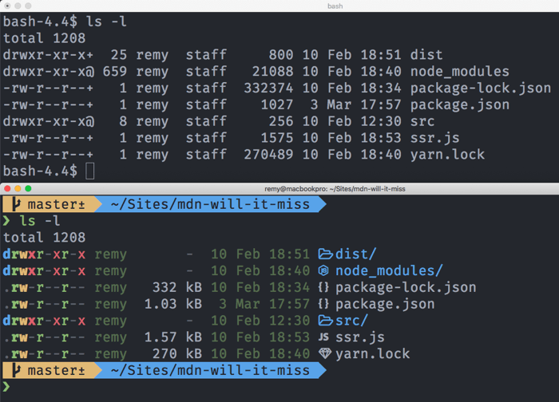
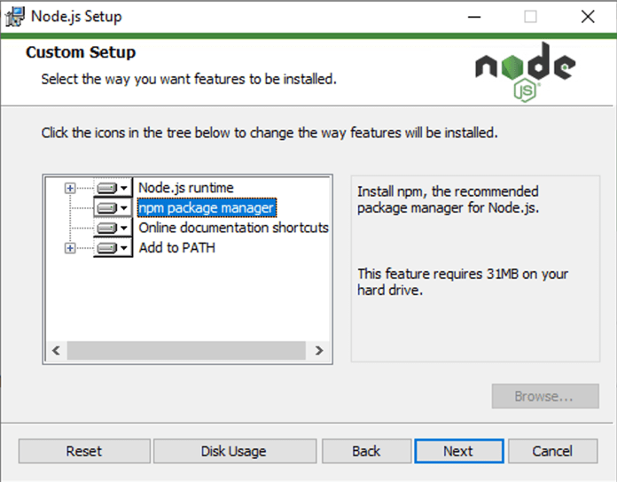

In your development process you'll undoubtedly be required to run some command in the terminal (or on the "command line" — these are effectively the same thing). This article provides an introduction to the terminal, the essential commands you'll need to enter into it, how to chain commands together, and how to add your own command line interface (CLI) tools.
| Prerequisites: | Familiarity with the core HTML, CSS, and JavaScript languages. |
|---|---|
| Objective: | To understand what the terminal/command line is, what basic commands you should learn, and how to install new command line tools. |
The terminal is a text interface for executing text-based programs. If you're running any tooling for web development there's a near-guaranteed chance that you'll have to pop open the command line and run some commands to use your chosen tools (you'll often see such tools referred to as CLI tools — command line interface tools).
A large number of tools can be used by typing commands into the command line; many come pre-installed on your system, and a huge number of others are installable from package registries. Package registries are like app stores, but (mostly) for command line based tools and software. We’ll see how to install some tools later on in this chapter, and we’ll learn more about package registries in the next chapter.
One of the biggest criticisms of the command line is that it lacks hugely in user experience. Viewing the command line for the first time can be a daunting experience: a blank screen and a blinking cursor, with very little obvious help available on what to do.
On the surface they’re far from welcoming but there’s a lot you can do with them, and we promise that, with a bit of guidance and practice, using them will get easier! This is why we are providing this chapter — to help you get started in this seemingly unfriendly environment.
The terminal originates from around the 1950s-60s and its original form really doesn’t resemble what we use today (for that we should be thankful). You can read a bit of the history on Wikipedia’s entry for Computer Terminal.
Since then, the terminal has remained a constant feature of all operating systems — from desktop machines, to servers tucked away in the cloud, to microcomputers like the Raspberry PI Zero, and even to mobile phones. It provides direct access to the computer’s underlying file system and low-level features, and is therefore incredibly useful for performing complex tasks rapidly, if you know what you are doing.
It is also useful for automation — for example to write a command to update the titles of hundreds of files instantly, say from “ch01-xxxx.png” to “ch02-xxxx.png”. If you updated the file names using your finder or explorer GUI app, it would take you a long time.
Anyway, the terminal is not going away anytime soon.
Below you can see some of the different flavours of programs that are available that can get you to a terminal.
The next images show the command prompts available in Windows — there’s a good range of options from the "cmd" program to "powershell" — which can be run from the start menu by typing the program name.
And below, you can see the macOS terminal application.

Many developers today are using Unix-based tools (e.g. the terminal, and the tools you can access through it). Many tutorials and tools that exist on the web today support (and sadly assume) Unix-based systems, but not to worry — they are available on most systems. In this section, we’ll look at how to get access to the terminal on your chosen system.
As hinted at above, Linux/Unix systems have a terminal available by default, listed among your Applications.
macOS has a system called Darwin that sits underneath the graphical user interface. Darwin is the Unix-like system, which provides the terminal, and access to the low-level tools. macOS Darwin mostly has parity with Unix, certainly good enough to not cause us any worries as we work through this article.
The terminal is available on macOS at Applications/Utilities/Terminal.
As with some other programming tools, using the terminal (or command line) on Windows has traditionally not been as simple or easy as on other operating systems. But things are getting better.
Windows has traditionally had its own terminal-like program called cmd (“the command prompt”) for a long time, but this definitely doesn’t have parity with Unix commands, and is equivalent to the old-style Windows DOS prompt.
Better programs exist for providing a terminal experience on Windows, such as Powershell (see here to find installers), and Gitbash (which comes as part of the git for Windows toolset)
However, the best option for Windows in the modern day is the Windows Subsystem for Linux (WSL) — a compatibility layer for running Linux operating systems directly from inside Windows 10, allowing you to run a “true terminal” directly on Windows, without needing a virtual machine.
This can be installed directly from the Windows store for free. You can find all the documentation you need in the Windows Subsystem for Linux Documentation.

In terms of what option to choose on Windows, we’d strongly recommend trying to install the WSL. You could stick with the default command prompt (cmd), and many tools will work OK, but you’ll find everything easier if you have better parity with Unix tools.
Generally you'll find these two terms used interchangeably. Technically, a terminal is software that starts and connects to a shell. A shell is your session and session environment (where things like the prompt and shortcuts might be customised). The command line is the literal line where you enter commands and the cursor blinks.
Although there's a great wealth of tools available from the command line, if you're using tools like Visual Studio Code there's also a mass of extensions that can be used as a proxy to using terminal commands without needing to use the terminal directly. However, you won’t find a code editor extension for everything you want to do — you’ll have to get some experience with the terminal eventually.
Enough talk — let’s start looking at some terminal commands! Out of the box, here are just a few of the things the command line can do, along with names of relevant tools in each case:
cdmkdirtouchcpmvrmcurlgrepless, cat<div>s in an HTML file to <article>): awk, tr, sedNote: There are a number of good tutorials on the web that go much deeper into the command line on the web — this is only a brief introduction!
Let's move forward and look at using a few of these tools on the command line. Before you go any further, open your terminal program!
When you visit the command line you will inevitably need to navigate to a particular directory to "do something". All the operating systems (assuming a default setup) will launch their terminal program in your "home" directory, and from there you’re likely to want to move to a different place.
The cd command lets you Change Directory. Technically, cd isn’t a program but a built-in. This means your operating system provides it out of the box, and also that you can’t accidentally delete it — thank goodness! You don’t need to worry too much about whether a command is a built-in or not, but bear in mind that built-ins appear on all unix-based systems.
To change directory, you type cd into your terminal, followed by the directory you want to move to. Assuming the directory is inside your home directory, you can use cd Desktop (see the screenshots below).

Try typing this into your system's terminal:
cd Desktop
If you want to move back up to the previous directory, you can use two dots:
cd ..
Note: A very useful terminal shortcut is using the tab key to autocomplete names that you know are present, rather than having to type out the whole thing. For example, after typing the above two commands, try typing cd D and pressing tab — it should autocomplete the directory name Desktop for you, provided it is present in the current directory. Bear this in mind as you move forward.
If the directory you want to go to is nested deep, you need to know the path to get to it. This usually becomes easier as you get more familiar with the structure of your file system, but if you are not sure of the path you can usually figure it out with a combination of the ls command (see below), and by clicking around in your Explorer/Finder window to see where a directory is, relative to where you currently are.
For example, if you wanted to go to a directory called src, located inside a directory called project, located on the Desktop, you could type these three commands to get there from your home folder:
cd Desktop cd project cd src
But this a waste of time — instead, you can type one command, with the different items in the path separated by forward slashes, just like you do when specifying paths to images or other assets in CSS, HTML, or JavaScript code:
cd Desktop/project/src
Note that including a leading slash on your path makes the path absolute, for example /Users/your-user-name/Desktop. Omitting the leading slash like we’ve done above makes the path relative to the your present working directory. This is exactly the same as you would see with URLs in your web browser. A leading slash means "at the root of the web site", whereas omitting the slash means "the URL is relative to my current page".
Note: On windows you use backslashes instead of forward slashes, e.g. cd Desktop\project\src — this may seem really odd, but if you are interested in why, watch this YouTube clip featuring an explanation by one of Microsoft’s Principal engineers.
Another built-in Unix command is ls (short for list), which lists the contents of the directory you’re currently in. Note that this won’t work if you’re using the default Windows command prompt (cmd) — the equivalent there is dir.
Try running this now in your terminal:
ls
This gives you a list of the files and directories in your present working directory, but the information is really basic — you only get the name of each item present, not whether it is a file or a directory, or anything else. Fortunately, a small change to the command usage can give you a lot more information.
Most terminal commands have options — these are modifiers that you add onto the end of a command, which make it behave in a slightly different way. These usually consist of a space after the command name, followed by a dash, followed by one or more letters.
For example, give this a go and see what you get:
ls -l
In the case of ls, the -l (dash ell) option gives you a listing with one file or directory on each line, and a lot more information shown. Directories can be identified by looking for a letter "d" on the very left-hand side of the lines. Those are the ones we can cd into.
Below is a screenshot with a “vanilla” macOS terminal at the top, and a customised terminal with some extra icons and colors to keep it looking lively — both showing the results of running ls -l:

Note: To find out exactly what options each command has available, you can look at its man page. This is done by typing the man command, followed by the name of the command you want to look up, for example man ls. This will open up the man page in the terminal’s default text file viewer (for example, less in my terminal), and you should then be able to scroll through the page using the arrow keys, or some similar mechanism. The man page lists all the options in great detail, which may be a bit intimidating to begin with, but at least you know it’s there if you need it. Once you are finished looking through the man page, you need to quit out of it using your text viewer’s quit command ("q" in less; you may have to search on the web to find it if it isn’t obvious).
Note: To run a command with multiple options at the same time, you can usually put them all in a single string after the dash character, for example ls -lah, or ls -ltrh. Try looking at the ls man page to work out what these extra options do!
Now that we’ve discussed two fundamental commands, have a little poke around your directory and see if you can navigate from one place to the next.
There are a number of other basic utility commands that you’ll probably end up using quite a lot as you work with the terminal. They are pretty simple, so we won’t explain them all in quite as much detail as the previous couple.
Have a play with them in a test directory you’ve created somewhere so that you don’t accidentally delete anything important, using the example commands below for guidance:
mkdir — this creates a new directory inside the current directory you are in, with the name you provide after the command name. For example, mkdir my-awesome-website will make a new directory called my-awesome-website.rmdir — removes the named directory, but only if it’s empty. For example rmdir my-awesome-website will remove the directory we created above. If you want to remove a directory that is not empty (and also remove everything it contains), then you can use the -r option (recursive), but this is dangerous. Make sure there is nothing you might need inside the directory later on, as it will be gone forever.touch — creates a new empty file, inside the current directory. For example, touch mdn-example.md creates a new empty file called mdn-example.md.mv — moves a file from the first specified file location to the second specified file location, for example mv mdn-example.md mdn-example.txt (the locations are written as file paths). This command moves a file called mdn-example.md in the current directory to a file called mdn-example.txt in the current directory. Technically the file is being moved, but from a practical perspective, this command is actually renaming the file.cp — similar in usage to mv, cp creates a copy of the file in the first location specified, in the second location specified. For example, cp mdn-example.txt mdn-example.txt.bak creates a copy of mdn-example.txt called mdn-example.txt.bak (you can of course call it something else if you wish).rm — removes the specified file. For example, rm mdn-example.txt deletes a single file called mdn-example.txt. Note that this delete is permanent and can’t be undone via the recycle bin that you might have on your desktop user interface.Note: Many terminal commands allow you to use asterisks as "wild card" characters, meaning "any sequence of characters". This allows you to run an operation against a potentially large number of files at once, all of which match the specified pattern. As an example, rm mdn-* would delete all files beginning with mdn-. rm mdn-*.bak would delete all files that start with mdn- and end with .bak.
We’ve alluded to this before, but to be clear — you need to be careful with the terminal. Simple commands do not carry too much danger, but as you start putting together more complex commands, you need to think carefully about what the command will do, and try testing them out first before you finally run them in the intended directory.
Let’s say you had 1000 text files in a directory, and you wanted to go through them all and only delete the ones that have a certain substring inside the filename. If you are not careful, then you might end up deleting something important, losing you a load of your work in the process.
One good habit to get into is to write your terminal command out inside a text editor, figure out how you think it should look, and then make a backup copy of your directory and try running the command on that first, to test it.
Another good tip — if you’re not comfortable trying terminal commands out on your own machine, a nice safe place to try them is over at Glitch.com. Along with being a great place to try out web development code, the projects also give you access to a terminal, so you can run all these commands directly in that terminal, safe in the knowledge that you won’t break your own machine.

A great resource for getting a quick overview of specific terminal commands is tldr.sh. This is a community-driven documentation service, similar to MDN, but specific to terminal commands.
In the next section let’s step it up a notch (or several notches in fact) and see how we can connect tools together on the command line to really see how the terminal can be advantageous over the regular desktop user interface.
The terminal really comes into its own when you start to chain commands together using the | (pipe) symbol. Let’s look at a very quick example of what this means.
We’ve already looked at ls, which outputs the contents of the current directory:
ls
But what if we wanted to quickly count the number of files and directories inside the current directory? ls can’t do that on its own.
There is another Unix tool available called wc. This counts the number of words, lines, characters, or bytes of whatever is inputted into it. This can be a text file — the below example outputs the number of lines in myfile.txt:
wc -l myfile.txt
But it can also count the number of lines of whatever output is piped into it. For example, the below command counts the number of lines outputted by the ls command (what it would normally print to the terminal if run on its own) and outputs that count to the terminal instead:
ls | wc -l
Since ls prints each file or directory on its own line, that effectively gives us a directory and file count.
So what is going on here? A general philosophy of (unix) command line tools is that they print text to the terminal (also referred to "printing to standard output" or STDOUT). A good deal of commands can also read content from streamed input (known as "standard input" or STDIN).
The pipe operator can connect these inputs and outputs together, allowing us to build up increasingly more complex operations to suit our needs — the output from one command can become the input to the next command. In this case, ls would normally print its output to STDOUT, but instead ls’s output is being piped into wc, which takes that output as an input, counting the number of lines it contains, and prints that count to STDOUT instead.
Let’s go through something a bit more complicated. We will first try to fetch the contents of MDN's "fetch" page using the curl command (which can be used to request content from URLs), from https://developer.mozilla.org/en-US/docs/Web/API/fetch.
However, this URL is the old location of the page. If you enter it in a new browser tab, you’ll (eventually) get redirected to https://developer.mozilla.org/en-US/docs/Web/API/WindowOrWorkerGlobalScope/fetch.
Therefore, if you use curl to request https://developer.mozilla.org/docs/Web/API/fetch, you won’t get an output. Try it now:
curl https://developer.mozilla.org/en-US/docs/Web/API/fetch
We need to explicitly tell curl to follow redirects using the -L flag.
Let's also look at the headers that developer.mozilla.org returns using curl's -I flag, and print all the location redirects it sends to the terminal, by piping the output of curl into grep (we will ask grep to return all the lines that contain the word "location").
Try running the following, and you’ll see that in fact there are three redirects happening before we reach the final page:
curl https://developer.mozilla.org/docs/Web/API/fetch -L -I | grep location
Your output should look something like this (curl will first output some download counters and suchlike):
location: /en-US/docs/Web/API/fetch location: /en-US/docs/Web/API/GlobalFetch/GlobalFetch.fetch() location: /en-US/docs/Web/API/GlobalFetch/fetch location: /en-US/docs/Web/API/WindowOrWorkerGlobalScope/fetch
Although contrived, we could take this result a little further and transform the location: line contents, adding the base origin to the start of each one so that we get complete URLs printed out. For that, we'll add awk to the mix (which is a programming language akin to JavaScript or Ruby or Python, just a lot older!).
Try running this:
curl https://developer.mozilla.org/docs/Web/API/fetch -L -I | grep location | awk '{ print "https://developer.mozilla.org" $2 }'
Your final output should look something like this:
https://developer.mozilla.org/en-US/docs/Web/API/fetch https://developer.mozilla.org/en-US/docs/Web/API/GlobalFetch/GlobalFetch.fetch() https://developer.mozilla.org/en-US/docs/Web/API/GlobalFetch/fetch https://developer.mozilla.org/en-US/docs/Web/API/WindowOrWorkerGlobalScope/fetch
By combining these commands we've customised the output to show the full URLs that the Mozilla server is redirecting through when we request the /docs/Web/API/fetch URL.
Getting to know your system will prove useful in years to come — learn how these single serving tools work and how they can become part of your arsenal to solve niche problems.
Now we’ve had a look at some of the built-in commands your system comes equipped with, let’s look at how we can install a third-party CLI tool and make use of it.
The vast ecosystem of installable tools for front end web development currently exists mostly inside npm, a privately owned, package hosting service that works closely together with Node.js. This is slowly expanding — you can expect to see more package providers as time goes on.
Installing Node.js also installs the npm command line tool (and a supplementary npm-centric tool called npx), which offers a gateway to installing additional command line tools. Node.js and npm work the same across all systems: macOS, Windows, and Linux.
Install npm on your system now, by going to the URL above and downloading and running a Node.js installer appropriate to your operating system. If prompted, make sure to include npm as part of the installation.

Although we'll look at a number of different tools in the next article onwards, we'll cut our teeth on Prettier. Prettier is an opinionated code formatter that has "few options". Fewer options tends to mean simpler. Given how tooling can sometimes get out of hand in terms of complexity, "few options" can be very appealing.
Before we dive into installing Prettier, there's a question to answer — "where should we install to?"
With npm we have the choice of installing tools globally — so we can access them anywhere — or locally to the current project directory.
There's pros and cons each way — and this list of pros and cons for globally installing is far from exhaustive:
| Pros of installing globally | Cons of installing globally |
|---|---|
| Accessible anywhere in your terminal | May not be compatible with your project's codebase |
| Only install once | Other developers in your team won't have access to these tools, for example if you are sharing the codebase over a tool like git. |
| Uses less disk space | Related to the previous point, it makes project code harder to replicate (if you install your tools locally, they can be set up as dependencies and installed with npm install). |
| Always the same version | |
| Feels like any other unix command |
Although the cons list is shorter, the negative impact of global installing is potentially much larger than the benefits. However, for now we'll err on the side of simplicity and install globally to keep things simple. We'll look more at local installs and why they're good in the next article.
For this article we will install Prettier as a global command line utility.
Prettier is an opinionated code formatting tool for front end developers, focusing around JavaScript-based languages and adding support for HTML, CSS, SCSS, JSON and more.
Prettier can:
Once you've installed node, open up the terminal and run the following command to install Prettier:
npm install --global prettier
Once the command has finished running, the Prettier tool is now available in your terminal, at any location in your file system.
Running the command without any arguments, as with many other commands, will offer up usage and help information. Try this now:
prettier
Your output should look something like this:
Usage: prettier [options] [file/glob ...] By default, output is written to stdout. Stdin is read if it is piped to Prettier and no files are given. …
It's always worth at the very least skimming over the usage information, even if it is long. It'll help you to understand better how the tool is intended to be used.
Let’s have a quick play with Prettier, so you can see how it works.
First of all, create a new directory somewhere on your file system that is easy to find. Maybe a directory called prettier-test on your Desktop.
Now save the following code in a new file called index.js, inside your test directory:
const myObj = {
a:1,b:{c:2}}
function printMe(obj){console.log(obj.b.c)}
printMe(myObj)
We can run prettier against a codebase to just check if our code wants adjusting. cd into your directory, and try running this command:
prettier --check index.js
You should get on output along the lines of
Checking formatting... index.js Code style issues found in the above file(s). Forgot to run Prettier?
So there's some code styles that can be fixed. No problem. Adding the --write option to the prettier command will fix those up, leaving us to focus on actually writing useful code.
Now try running this version of the command:
prettier --write index.js
You’ll get an output like this
Checking formatting... index.js Code style issues fixed in the above file(s).
But more importantly, if you look back at your JavaScript file you’ll find it has been reformatted to something like this:
const myObj = {
a: 1,
b: { c: 2 },
};
function printMe(obj) {
console.log(obj.b.c);
}
printMe(myObj);
Depending on your workflow (or the workflow that you pick) you can make this an automated part of your process. Automation is really where tools excel; our personal preference is the kind of automation that "just happens" without having to configure anything.
With Prettier there's a number of ways automation can be achieved and though they're beyond the scope of this article, there's some excellent resources online to help (some of which have been linked to). You can invoke prettier:
Our personal preference is the second one — while using say VS Code, Prettier kicks in and cleans up any formatting it needs to do every time we hit save. You can find a lot more information about using Prettier in different ways in the Prettier docs.
If you want to play with a few more tools, here’s a brief list that are fun to try out:
bat — A “nicer” cat (cat is used to print the contents of files).prettyping — ping on the command line, but visualized (ping is a useful tool to check if a server is responding).htop — A process viewer, useful for when something is making your CPU fan behave like a jet engine and you want to identify the offending program.tldr — mentioned earlier in this chapter, but available as a command line tool.Note that some of the above suggestions may need installing using npm, like we did with Prettier.
That brings us to the end of our brief tour of the terminal/command line. Next up we’ll be looking in more detail at package managers, and what we can do with them.
{{PreviousMenuNext("Learn/Tools_and_testing/Understanding_client-side_tools/Overview","Learn/Tools_and_testing/Understanding_client-side_tools/Package_management", "Learn/Tools_and_testing/Understanding_client-side_tools")}}